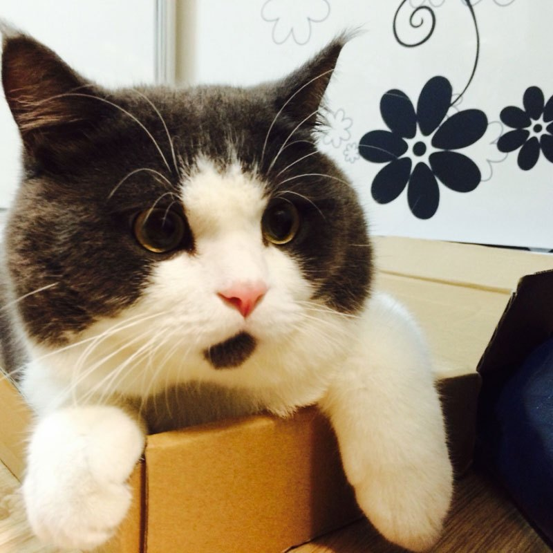

The Sphynx cat is a breed of cat known for its lack of coat (fur). It was developed through selective breeding, starting in the 1960s. The skin should have the texture of chamois, as it has fine hairs, or they may be completely hairless. Whiskers may be present, either whole or broken, or may be totally absent. They also have a narrow, long head, and webbed feet. Their skin is the color that their fur would be, and all the usual cat markings (solid, point, van, tabby, tortie, etc.)
 may be found on the Sphynx cat's skin. Because they
have no coat, they lose more body heat than coated cats. This makes them warm to the touch as well as
heat-seeking. Contents 1 Breed standards
2 Behaviour 3 History of the cat breed 3.1 Toronto 3.2 Minnesota 4 Breeding 5 Care 6 Health issues 7
Genetics 8 References Breed standards These breed standards are defined by The International Cat
Association (TICA):[1] Wedge-shaped heads
with prominent cheekbones Large, lemon-shaped eyes Very large ears with no hair on inside, but soft
down on outside base Well-muscled, powerful neck of medium length Medium length torso, barrel-chested,
and full, round abdomen, sometimes
called a pot belly Paw pads thicker than other
may be found on the Sphynx cat's skin. Because they
have no coat, they lose more body heat than coated cats. This makes them warm to the touch as well as
heat-seeking. Contents 1 Breed standards
2 Behaviour 3 History of the cat breed 3.1 Toronto 3.2 Minnesota 4 Breeding 5 Care 6 Health issues 7
Genetics 8 References Breed standards These breed standards are defined by The International Cat
Association (TICA):[1] Wedge-shaped heads
with prominent cheekbones Large, lemon-shaped eyes Very large ears with no hair on inside, but soft
down on outside base Well-muscled, powerful neck of medium length Medium length torso, barrel-chested,
and full, round abdomen, sometimes
called a pot belly Paw pads thicker than other
cats, giving the appearance of walking on cushions Whiplike, tapering tail from body to tip, (sometimes with fur all over tail or a puff of fur on the tip, like a lion) Muscular body[1] Behaviour A male purebred Sphynx in the "mink" pattern. Like a pointed cat, the mink pattern also exhibits darker points: the ears, tips of tail, feet and nose. However, whereas the pointed pattern is entirely colorless everywhere else on the body, the mink coloration has some color throughout the body and just slightly darker points in adulthood. The mink pattern can be combined with any color.[2] Sphynxes are known for their extroverted behavior. They display a high level of energy, intelligence, curiosity, and affection for their owners.[3] They are one of the more dog-like breeds of cats, frequently greeting their owners at the door and friendly when meeting strangers. History of the cat breed Although hairless cats have been reported throughout history, breeders in Europe have been working on the Sphynx breed since the early 1960s.Two different sets of hairless felines discovered in North America in the 1970s provided the foundation cats for what was shaped into the existing Sphynx
hairless kitten named Prune was born to a black and white domestic shorthair queen (Elizabeth). The kitten was mated with its mother (something called backcrossing), which produced one more naked kitten. Together with a few naked kittens found later, the cat Prune marked the first attempt to create a hairless breed. After purchasing these cats in 1966 and initially referring to them as "Moonstones" and "Canadian Hairless," Ridyadh Bawa, a science graduate of the University of Toronto, combined efforts with his mother Yania, a long time Siamese breeder,[6] and Kees and Rita Tenhoves to develop a breed of cats which
 The Canadian Sphynx face challenges unique to their nature. Because of their lack of protective fur, skin cancer may be a problem if exposed to sunlight for long durations of time.[14] The lack of hair can cause health issues with kittens in the first weeks of life because of susceptibility to respiratory infections. Reputable breeders should not let their kittens go to new homes without being at least 14 weeks of age to ensure the kitten is mature enough to cope in a new environment.[15] The breed does have instances of the genetic disorder hypertrophic cardiomyopathy (HCM). Studies are being undertaken to understand the links in breeding and the disorder.[16] The Sphynx cat has a high rate of heart disease, either HCM or mitral valve dysplasia. In a study of 114 cats, 34% were found to have an abnormal heart.[17] 16 had mitral valve dysplasia and 23 had HCM. These prevalences were found in cats with an average age of 2.62 years. A type of muscular dystrophy associated with alpha-dystroglycan deficiency, and similar to that seen in Devon Rex cats, has also been described, but is rarely seen.[18] Genetics The Sphynx hairlessness is produced by the same gene as the Devon Rex phenotype. Moreover, it was found that the curly coat of Selkirk Rex cats is also associated with this gene.[19] In detail the gene encodes Keratin 71 (KRT71) and is responsible for the keratinization of the hair follicle. The Sphynx mutation leads to a complete loss-of-function where the structure of the hair is damaged so that i.e. the hair can be formed but is easily dislodged.